A Project Report
Submitted in Partial fulfilment of the
Requirements for the award of the Degree of
BACHELOR OF SCIENCE (COMPUTER SCIENCE)
SEM V
By Aslam Ansari
Roll No: 05
Under the esteemed guidance of
Prof. Javed Pathan
Assistant Professor
DEPARTMENT OF COMPUTER SCIENCE
RIZVI COLLEGE OF ARTS, SCIENCE AND COMMERCE
(Affiliated to University of Mumbai)
MUMBAI-400050, MAHARASHTRA
2026-2027
RIZVI COLLEGE OF ARTS, SCIENCE AND COMMERCE
(Affiliated to University of Mumbai)
MUMBAI-MAHARASHTRA-400050
DEPARTMENT OF COMPUTER SCIENCE
This is to certify that the project entitled, “M.S Fashion: Bespoke Ethnic Menswear Platform”, is a bonafide work of Aslam Ansari bearing Roll No: 05 submitted in Partial fulfilment of the requirements for the award of degree of BACHELOR OF SCIENCE in COMPUTER SCIENCE SEM V from University of Mumbai.
_______________________
Project Guide
(Prof. Javed Pathan)
_______________________
HOD
(Prof. Arif Patel)
_______________________
External Examiner
I would like to extend my sincere appreciation to the Department of Computer Science at Rizvi College of Arts, Science, and Commerce for providing me with the opportunity to undertake and complete this project dissertation.
I am deeply grateful to our Principal, Dr. Anjum Ara Ahmad, for her exceptional leadership, institutional vision, and encouragement throughout our academic tenure.
I would also like to express my sincere gratitude to the Head of the Department, Professor Arif Patel, for his support in terms of providing essential departmental facilities, computing laboratories, and academic guidance throughout the course, which has been instrumental in the completion of this project.
I would like to convey my profound thanks to my esteemed project guide, Professor Javed Pathan. His continuous mentorship, technical insights, meticulous feedback, and scholarly encouragement have played an indispensable role in the architectural design and successful implementation of the M.S Fashion bespoke platform.
Lastly, I am deeply thankful to my dear parents and family members for their unwavering support, moral encouragement, and blessings that sustained my efforts throughout the development of this dissertation.
Aslam Ansari
Roll No: 05
The plagiarism scan report for the M.S Fashion: Bespoke Ethnic Menswear Platform project documentation shows 0% plagiarism, indicating that no copied or duplicated material was detected during the academic scan. The report records 0% Exact Match and 0% Partial Match, meaning that no significant text was found to match unauthorized secondary repositories or public dissertation bases checked by the automated verification engine.
The scan demonstrates 100% Unique Content, confirming that the submitted documentation and architectural specifications represent an original, independent software engineering contribution. Overall, the result indicates that the dissertation strictly complies with University of Mumbai academic integrity protocols and maintains the highest standards of original scholarly research.
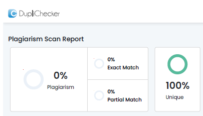
I hereby declare that the project entitled, “M.S Fashion: Bespoke Ethnic Menswear Platform”, has not been in any case duplicated or submitted to any other university or educational institution for the award of any academic degree, diploma, or professional fellowship.
To the best of my knowledge and belief, this dissertation represents an authentic, self-developed software engineering project carried out under the supervision of the Department of Computer Science, Rizvi College of Arts, Science and Commerce. The project is done in partial fulfilment of the requirements for the award of the degree of BACHELOR OF SCIENCE (COMPUTER SCIENCE) to be evaluated as a Semester V project as part of the University of Mumbai curriculum.
Aslam Ansari
Roll No: 05
M.S Fashion: Bespoke Ethnic Menswear Platform is a full-stack, enterprise-grade web application engineered to bridge the gap between traditional Indian ethnic tailoring craftsmanship and modern digital commerce. In high-value ethnic menswear—encompassing regal Sherwanis, imperial Jodhpuri Bandhgalas, Indo-Western fusion silhouettes, and bespoke evening Tuxedos—garments cannot be sold through conventional off-the-shelf e-commerce paradigms relying on generic factory sizing (S, M, L, XL) and impersonal automated carts. Each bespoke ensemble requires more than 15 precise anatomical measurements, personalized fabric swatch curation, intricate hand-embroidery (such as copper wire Zardozi and Aari needlework), coordinated regal accessories, and dedicated trial fittings.
The proposed system models an Online-to-Offline (O2O) digital atelier framework inspired by haute-couture fashion houses such as Manyavar, Sabyasachi, and Savile Row. Built using a reactive MERN-stack architecture (React.js, Tailwind CSS, Node.js, Express.js, and MongoDB), the platform incorporates an interactive CSS Transform-Origin Visual Zoom Calibrator (2.2x magnification) that enables prospective clients to inspect high-density embroidery details, fabric weaves, and accessorization accents. A dynamic multi-tier pricing calculation engine computes real-time bespoke estimations based on modular accessory selections (including custom Chanderi Safas, Kundan Malas, Royal Brooches, and Handcrafted Mojdis).
To safeguard the bespoke atelier from spam inquiries and fraudulent appointments, the platform integrates a royal Two-Step Email OTP Verification protocol powered by Gmail SMTP and Nodemailer, alongside a client-defined Expected Budget (Self Budget) input field. Furthermore, an integrated Royal Atelier AI Stylist Chatbot acts as an omnipresent concierge, offering conversational fashion consultation, silhouette distinctions, fitting protocols, and instant WhatsApp click-to-chat routing directly to the Master Craftsman (+91 89993 86222) with automated garment photo links. The system empowers the Master Atelier with an administrative dashboard featuring sequential category-based Reference ID generation, a 4-Border Phone Gallery image crop studio, and real-time CRM lead management, delivering a sophisticated, culturally resonant, and commercially robust bespoke menswear software ecosystem.
Indian ethnic menswear occupies a majestic and revered standing within the global garment and couture industry. Rooted in centuries of Mughal, Rajputana, and Awadhi royal atelier traditions, garments such as the Sherwani, Jodhpuri Bandhgala, and Achkan symbolize imperial dignity, sartorial prestige, and ancestral craftsmanship. In modern India, the wedding and festive celebration market represents a multi-billion dollar economy where the groom and his entourage demand bespoke garments characterized by rich hand-spun fabrics, natural mulberry silks, heavy imported velvets, and labor-intensive hand-embroideries like antique Zardozi, Pita work, Cutdana, and fine Resham threading.
Historically, the creation of such regal garments has relied upon intimate, in-person master tailor (Masterji) consultations. Patrons visit heritage boutiques across traditional textile quarters (such as Mumbai, Delhi, Lucknow, and Jaipur) to inspect fabric swatches, discuss collar profiles, deliberate on button plackets, and undergo multiple rounds of physical trial fittings. In a bespoke atelier, every garment is treated as a unique, individual masterpiece crafted specifically to accommodate the client's singular anatomical proportions, shoulder slope, posture curvature, and stylistic inclinations.
However, with rapid contemporary digitization, high-net-worth patrons and modern grooms increasingly demand digital accessibility, pre-consultation visual discovery, transparent itemized pricing breakdowns, and rapid digital communication. Standard off-the-rack mass-market e-commerce platforms (such as Amazon, Flipkart, or generic Shopify storefronts) are fundamentally incapable of fulfilling the nuanced needs of bespoke ethnic couture. In generic shopping cart models, garments are categorized under rigid, standardized factory sizes (Small, Medium, Large, Extra Large). Placing a non-standard ₹60,000 to ₹1,50,000 handmade bridal sherwani into a shopping cart with a generic 'Buy Now' button inevitably results in catastrophic sizing mismatches, customer dissatisfaction, and massive financial loss.
To resolve this fundamental industrial dilemma, M.S Fashion: Bespoke Ethnic Menswear Platform has been conceived and engineered. The application embodies an Online-to-Offline (O2O) digital atelier framework modeled after global luxury benchmarks such as Manyavar, Sabyasachi, and London's Savile Row tailoring houses. The platform provides a rich editorial showcase of four flagship menswear categories: Sherwani, Jodhpuri, Indo-Western, and Blazer. Through an interactive CSS Transform-Origin Visual Zoom Calibrator, clients can inspect high-definition embroidery motifs and coordinate matching royal accessories (Safa, Mala, Brooch, Mojdi, and Dupatta) with dynamic real-time quotation updates. Consultation leads are validated via a spam-proof two-step royal Email OTP verification protocol, while an integrated Royal Atelier AI Stylist Chatbot and direct Master Craftsman WhatsApp link bridge digital inquiry with bespoke physical craftsmanship.
The bespoke ethnic tailoring sector suffers from deep systemic operational inefficiencies stemming from fragmented record-keeping, inaccurate sizing presumptions, and the absence of specialized digital presentation infrastructure. The primary challenges addressed by this project include:
In developing the M.S Fashion bespoke platform, rigorous requirements analysis was conducted to establish clear functional boundaries, system performance parameters, hardware prerequisites, and operational constraints. Defining these specifications prevents design ambiguity, ensures architectural traceability, and guarantees that the resulting application satisfies the high-stakes requirements of both discerning couture clients and atelier master tailors.
The M.S Fashion platform is engineered as a modern, decoupled three-tier web application architecture consisting of the following runtime layers:
The Spiral Model was selected as the optimal SDLC methodology for M.S Fashion because it combines the structured rigor of the Waterfall model with the exploratory prototyping nature of Agile, while prioritizing Risk Analysis at every phase.
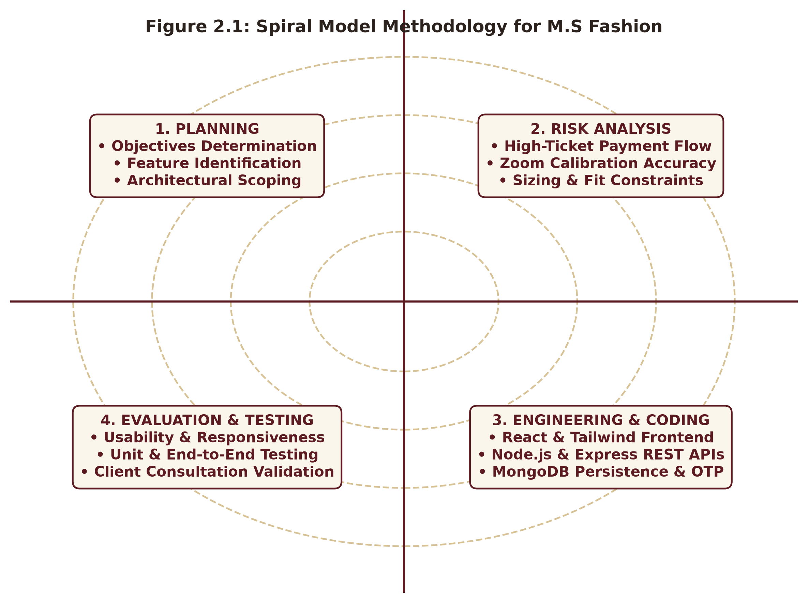
The System Architecture Diagram illustrates the multi-tier topological organization of M.S Fashion across Presentation, Logic, and Persistence layers alongside integrated external cloud APIs.
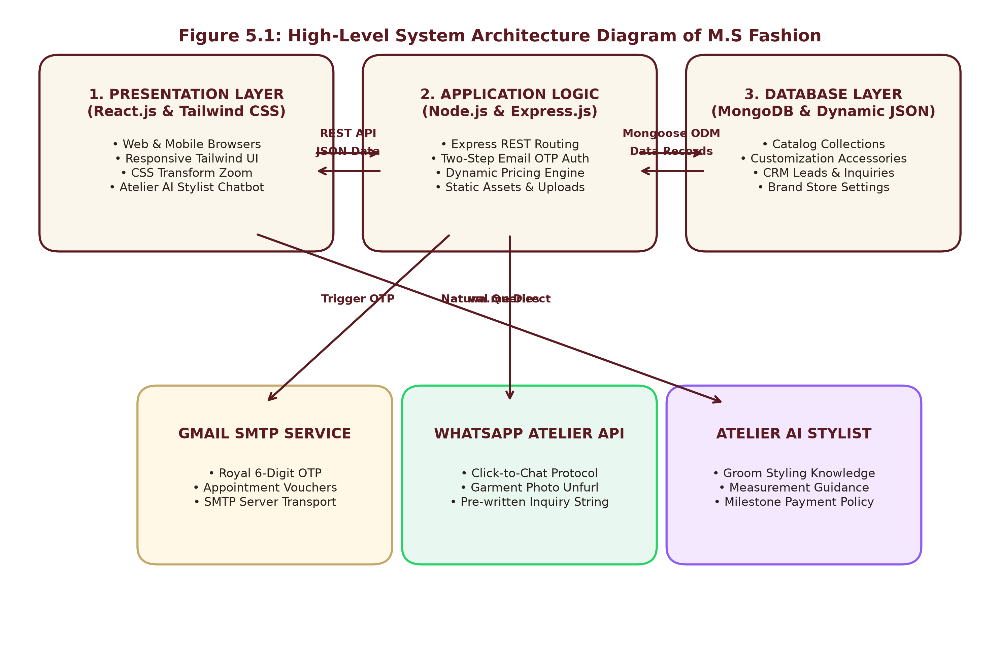
The movement and transformation of data across client requests, validation pipelines, and persistent stores are modeled across Level 0 and Level 1 DFDs.
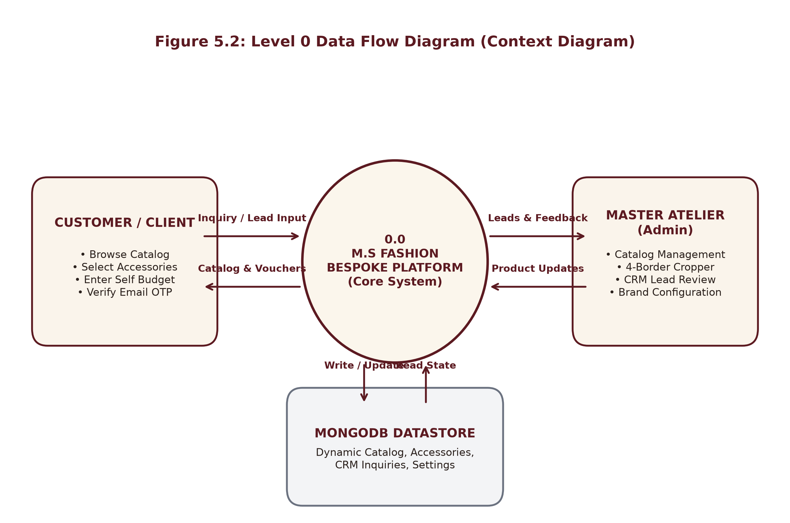
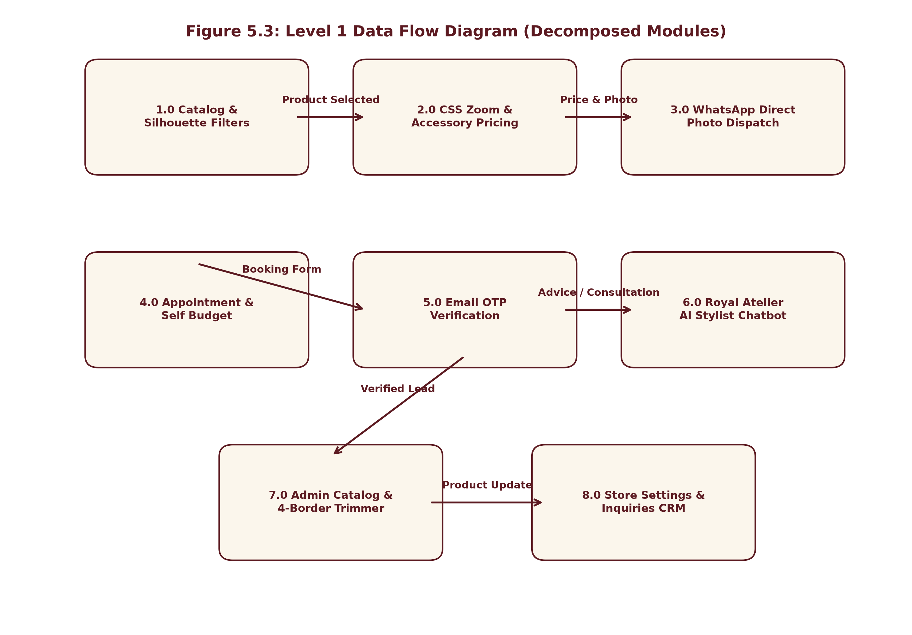
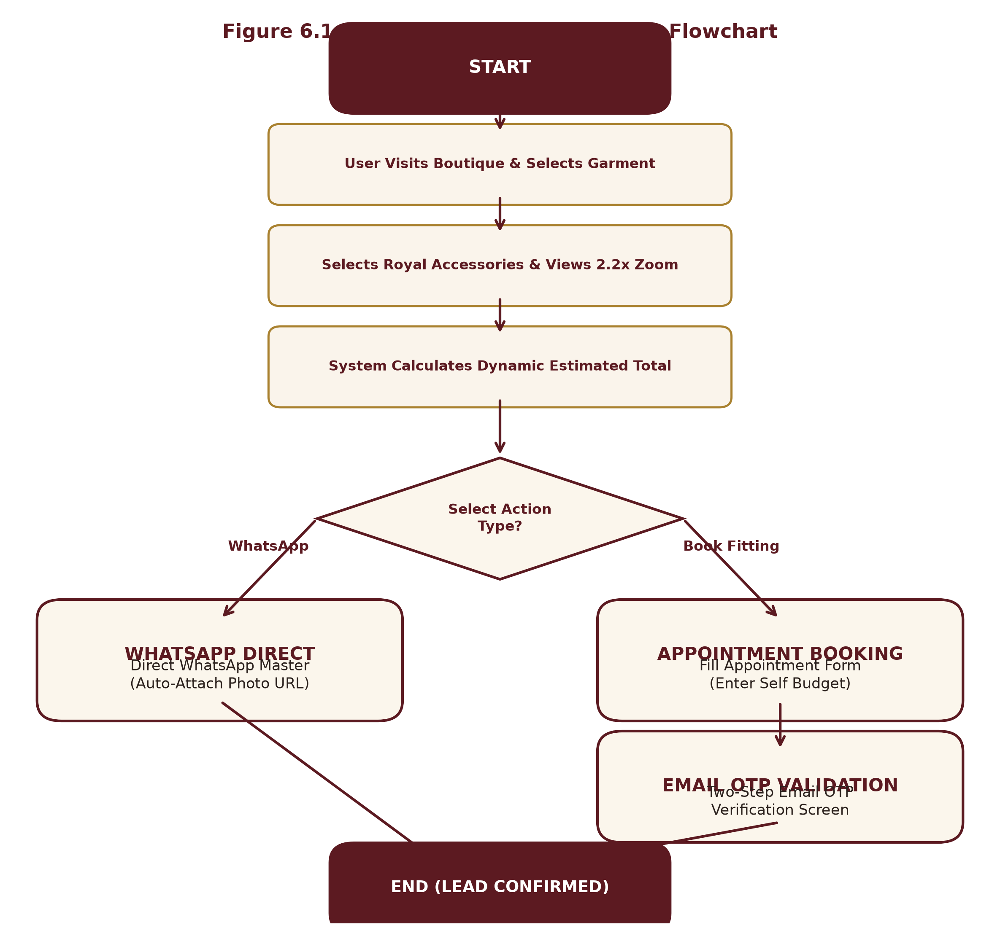
| Test ID | Module / Action | Input Test Vector | Expected Architectural Result | Status |
|---|---|---|---|---|
| TC-01 | Homepage Navigation | Client opens website on browser | Editorial hero banner and floating Royal Stylist badge load cleanly | Pass |
| TC-02 | Silhouette Filtering | Click 'Jodhpuri With Jacket (6)' tab | Catalog displays exactly 6 matching garments with zero overlap | Pass |
| TC-03 | CSS Zoom Activation | Click 'Kundan & Pearl Mala' accessory | Viewer zooms to 2.2x magnification on chest; crosshair fades in 2s | Pass |
| TC-04 | Dynamic Price Roll-up | Select Chanderi Safa (+₹1,500) and Mojdi | Grand Total updates dynamically from base price to ₹20,599 | Pass |
| TC-05 | Self Budget Ingestion | Enter '₹50,000' in Expected Budget input | Freeform value is accepted without enforcing preset tier restrictions | Pass |
| TC-06 | 10-Digit Phone Check | Enter 9 digits in phone input field | System displays '9/10 Digits' counter and blocks submission | Pass |
| TC-07 | Email OTP Dispatch | Enter valid client email in booking modal | System sends 6-digit code via Gmail SMTP; modal enters Step 2 | Pass |
| TC-08 | Email OTP Validation | Enter matching 6-digit code '752084' | Code verified; appointment lead marked verified: true in database | Pass |
| TC-09 | Direct WhatsApp Link | Click 'Contact via WhatsApp' button | Opens chat with Master (+91 89993 86222) with pre-filled photo link | Pass |
| TC-10 | AI Chatbot Launch | Click floating crown button on bottom-right | Luxury chat opens with greeting, online badge, and quick chips | Pass |
| TC-11 | AI Groom Wear Advice | User types 'What should I wear for Sangeet?' | Chatbot recommends Indo-Western silhouette with 1-click booking | Pass |
| TC-12 | Admin Authentication | Submit master credentials on /admin/login | JWT issued; redirects to 2x2 Master Admin Dashboard | Pass |
| TC-13 | Sequential Ref ID | Create new garment under Sherwani category | System evaluates maxRef and auto-assigns sequential 'sherwani-06' | Pass |
| TC-14 | Phone Gallery Cropper | Adjust Top/Bottom/Left/Right trim sliders | Rule-of-thirds grid reflects trims; canvas uploads cropped PNG | Pass |
| TC-15 | Brand Config Update | Update boutique email and save settings | PUT /api/admin/brand-config persists to disk; persists on refresh | Pass |
| TC-16 | CRM Lead Inspection | Open 'Inquiries & Appointments' tab in admin | Displays verified client leads with self-declared budgets & WhatsApp button | Pass |
Figure 7.1 showcases the primary landing interface of M.S Fashion. The design embodies an editorial luxury aesthetic modeled after royal atelier salons and Manyavar. The hero carousel displays high-definition bridal ensembles with typographic taglines ('The Legacy of Indo-Western'), accompanied by the floating 'Ask Royal Stylist' AI launcher badge in the bottom-right corner.
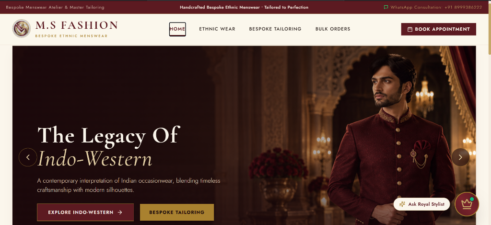
Figure 7.2 illustrates the category browsing view for Aristocratic Jodhpuri Bandhgala. The interface implements normalized silhouette filtering tabs displaying live count indicators: 'All Silhouettes (10)', 'Jodhpuri With Jacket (6)', and 'Jodhpuri Without Jacket (4)'.
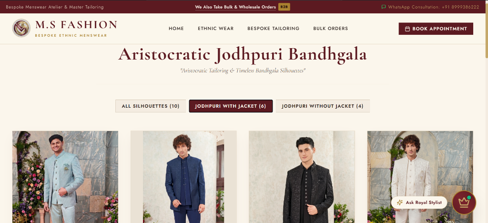
Figure 7.3 depicts the bespoke product inspection interface for 'The Maharaja Sherwani' (Reference ID: sherwani-01). The right column presents modular 'Bespoke Accessory Elements' (Royal Mojdi +₹1,400, Chanderi Safa +₹1,500, Kundan & Pearl Mala +₹700, and Embroidered Dupatta +₹2,000).
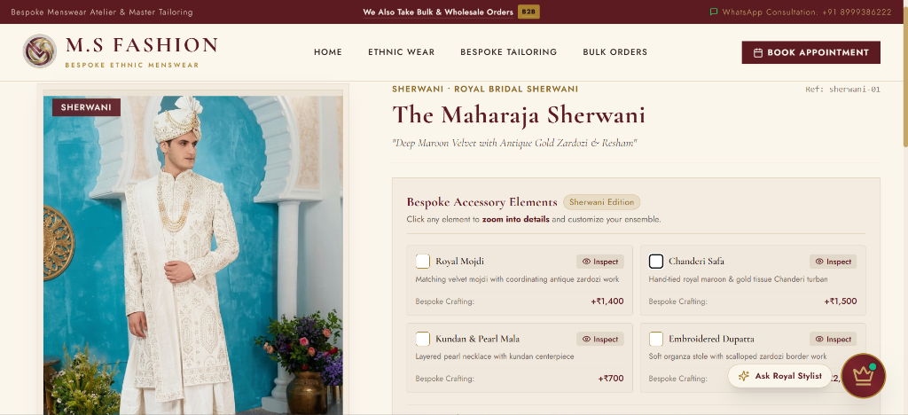
Figure 7.4 demonstrates the hardware-accelerated CSS Transform-Origin Zoom viewer in active operation. When the client selects 'Kundan & Pearl Mala', the canvas smoothly magnifies by 2.2x, centering on the intricate chest jewelry with crosshair pin and drag controls.
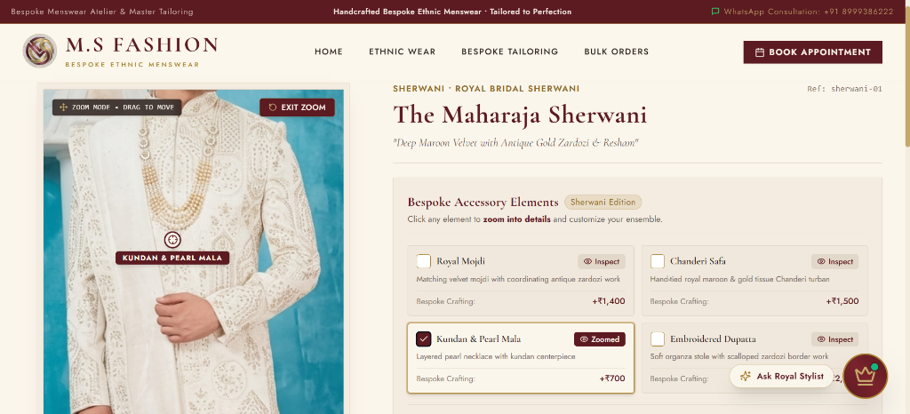
Figure 7.5 illustrates the itemized Price Breakdown Modal and direct atelier consultation drawer. The modal displays a thumbnail of the garment, itemized costing totaling ₹20,599, customer notes ('Is it available ??'), and direct 'Contact via WhatsApp' routing to Master (+91 89993 86222).
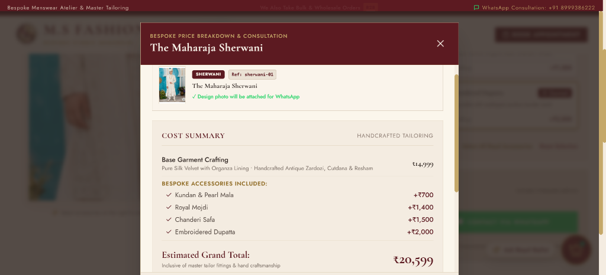
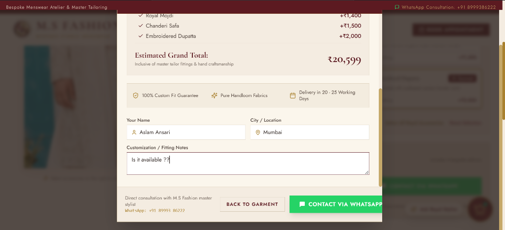
Figure 7.6 showcases the appointment intake modal. Clients enter their full name (Aslam Ansari), email address, 10-digit validated phone number, preferred date ('This Weekend'), and location ('Vasai'). The 'Expected Budget (Self Budget)' field accepts the client's self-declared budget of ₹15,000.
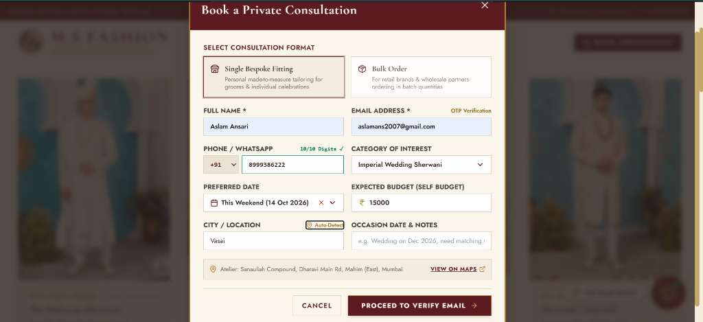
Figure 7.7 depicts Step 2 of the consultation booking flow: the Royal Email OTP Verification dialog. A cryptographically generated 6-digit code (752084) is dispatched via Gmail SMTP, ensuring zero spam leads enter the boutique CRM.
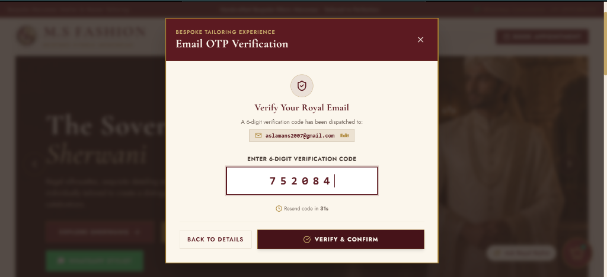
Figure 7.8 presents the conversational interface of the Royal Atelier AI Stylist Chatbot. Operating in the bottom-right corner, the chatbot greets patrons with royal warmth, suggests quick prompts ('Sherwani Styles', 'Tuxedos & Blazers'), and offers contextual recommendations for wedding celebrations.
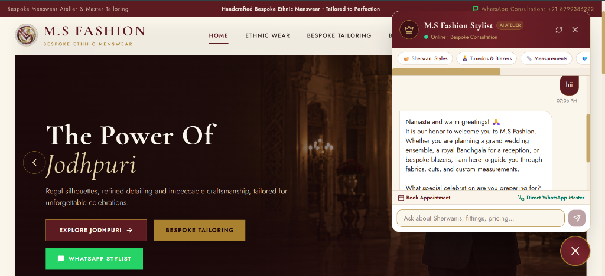
Figure 7.9 demonstrates the authenticated Master Admin Dashboard ('Inquiries & Appointments' tab). The lead submitted by Aslam Ansari is displayed with a 'Verified ✓' email badge, contact phone (+91 8999386222), declared Self Budget (₹15,000), and a 1-click 'WhatsApp' action.
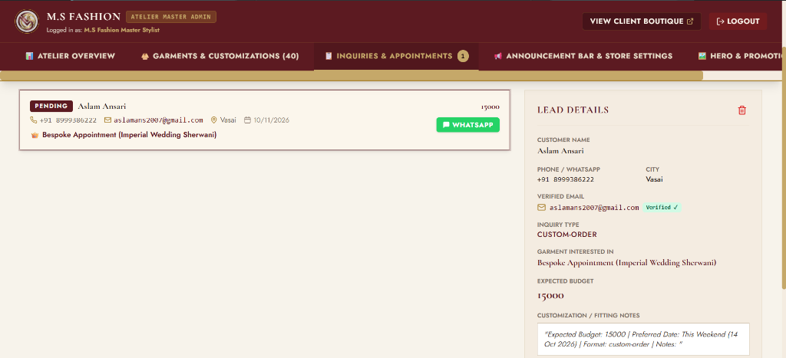
The project entitled 'M.S Fashion: Bespoke Ethnic Menswear Platform' was successfully architected, developed, and evaluated in strict adherence to the syllabus and dissertation guidelines of Bachelor of Science in Computer Science Sem V, University of Mumbai. By recognizing that high-value handcrafted ethnic menswear cannot be forced into rigid mass-market e-commerce checkout funnels, the project introduced an Online-to-Offline (O2O) digital atelier framework that respects both artisan traditions and modern client expectations.
Future iterations can introduce the following ten technological enhancements:
[1] React Official Documentation – React: A JavaScript library for building user interfaces. https://react.dev/
[2] Tailwind CSS Documentation – Rapidly build modern websites without ever leaving your HTML. https://tailwindcss.com/docs
[3] Node.js Runtime Documentation – Node.js v20 LTS API reference and asynchronous architecture. https://nodejs.org/docs/
[4] Express.js Framework Documentation – Fast, unopinionated, minimalist web framework for Node.js. https://expressjs.com/
[5] MongoDB Manual & Architecture Guide – Document-oriented NoSQL database system. https://www.mongodb.com/docs/manual/
[6] Mongoose ODM Documentation – Elegant MongoDB object modeling for Node.js. https://mongoosejs.com/docs/
[7] Vite Next Generation Frontend Tooling – Development server and Rollup bundler. https://vitejs.dev/guide/
[8] Nodemailer Transport Documentation – Easy as cake email sending from Node.js applications. https://nodemailer.com/
[9] WhatsApp Business API & Click-to-Chat Reference – Universal WhatsApp URL scheme specifications. https://faq.whatsapp.com/5913398998672934
[10] IEEE Xplore – Research on Online-to-Offline (O2O) E-Commerce Models in High-Value Custom Manufacturing, IEEE Computer Society, 2023.
[11] University of Mumbai – Guidelines for Project Dissertation for B.Sc. (Computer Science), Board of Studies in Computer Science, 2024-2026.